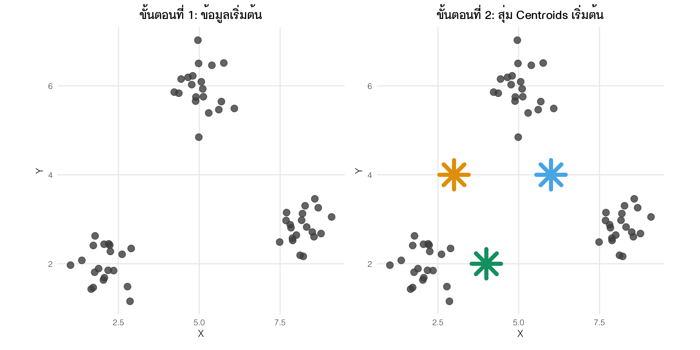
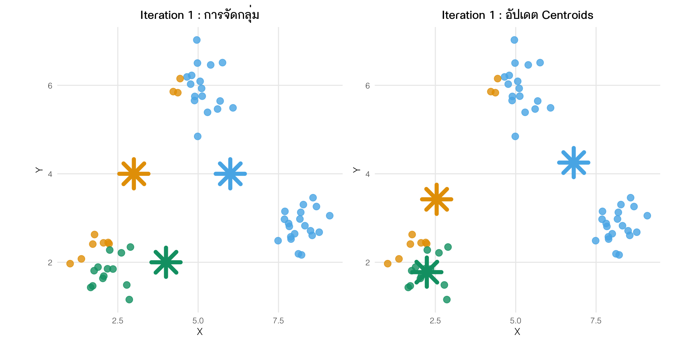
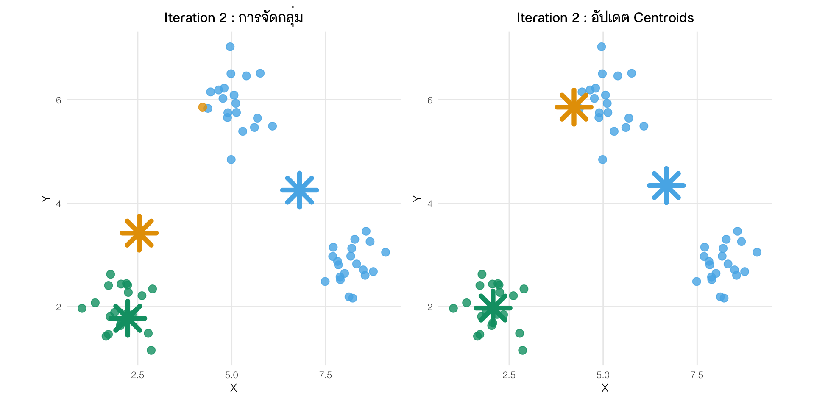
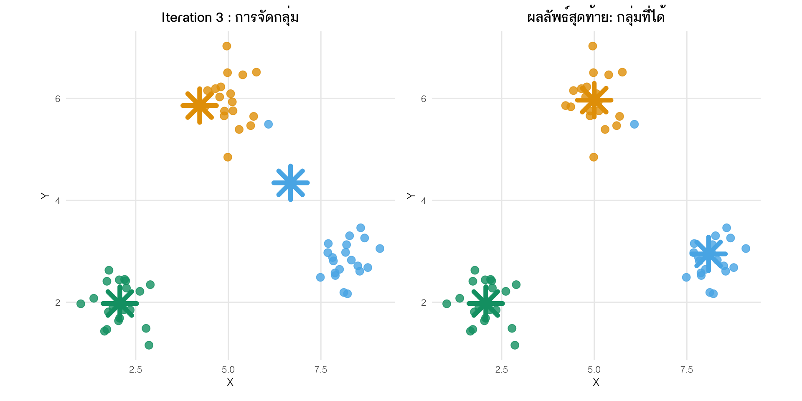
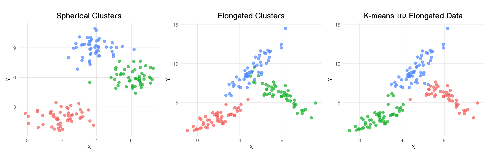

Rows: 385
Columns: 11
$ student_id <dbl> 1, 2, 3, 4, 5, 6, 7, 8, 9, 10, 11, 12, 13, 14, 15…
$ choose_method <dbl> 60, 40, 40, 20, 10, 20, 20, 40, 50, 60, 20, 40, 4…
$ concepts <dbl> 57.14286, 57.14286, 42.85714, 50.00000, 21.42857,…
$ interpretation <dbl> 56.25000, 31.25000, 50.00000, 43.75000, 50.00000,…
$ research_score <dbl> 72, 72, 71, 72, 62, 75, 82, 76, 85, 73, 76, 83, 9…
$ submit_time <dbl> 156.41160, 145.08406, 141.08420, 150.26853, 129.1…
$ percent_submit <dbl> 66.66667, 100.00000, 100.00000, 88.88889, 100.000…
$ gender <chr> "ช", "ช", "ญ", "ญ", "ช", "ญ", "ญ", "ญ", "ญ", "ญ",…
$ department <chr> "ไทยสังคม", "ภาษาอังกฤษ", "ประถมศึกษา", "ประถมศึกษา",…
$ learning_performance <dbl> 95.00000, 73.33333, 93.21429, 90.00000, 95.00000,…
$ cheat_index <dbl> 0.9143358, 0.5934895, 0.8394027, 0.8664958, 0.997…Week 7 : Clustering
Assistant Prof. Siwachoat Srisuttiyakorn
Department of Educational Research and Psychology
Faculty of Education Chulalongkorn University
2025-09-07
Clustering
นักเรียนในชั้นเรียนสามารถจัดเป็นหมวดหมู่ได้กี่กลุ่ม อะไรบ้าง ตามข้อมูลพฤจิกรรมและผลการเรียนรู้
Clustering
-
Unsupervised Learning ที่ใช้ ค้นหากลุ่มที่มีลักษณะร่วมกันตามคุณลักษณะหรือตัวแปรของหน่วยข้อมูล โดยการจัดกลุ่มนี้ช่วยในการแบ่งข้อมูลออกเป็นกลุ่มย่อย ๆ ที่ภายในกลุ่มเดียวกันหน่วยข้อมูลจะมีลักษณะที่คล้ายคลึงกันมากที่สุด และระหว่างกลุ่มหน่วยข้อมูลจะมีความแตกต่างกันมากที่สุด
Partitioning Clustering
Hierarchical Clustering
Density-Based Clustering
Model-Based Clustering
Partitioning Clustering: K-Means Clustering
ตรงไปตรงมา กล่าวคือ พยายามแบ่งข้อมูลออกเป็น k กลุ่ม (ที่กำหนดไว้ล่วงหน้า)
หน่วยข้อมูลแต่ละหน่วยจะอยู่ในกลุ่มใดกลุ่มหนึ่งเท่านั้น (non-overlapping)
การจัดกลุ่มจะใช้ความแตกต่าง (distance) หรือความคล้าย (similarity) โดยพยายามจัดให้หน่วยข้อมูลที่มีความคล้ายกันอยู่ในกลุ่มเดียวกัน และหน่วยข้อมูลที่แตกต่างกันอยู่ต่างกลุ่มกัน
เหมาะกับ ข้อมูลที่มีความต่อเนื่อง (continuous data) และมีการกระจายตัวแบบทรงกลม (spherical clusters) โดยแต่ละกลุ่มมีขนาดใกล้เคียงกัน และไม่มีค่าผิดปกติ (outliers) มากเกินไป
K-Means Clustering
เลือกจำนวนกลุ่ม k ที่ต้องการแบ่ง
สุ่มเลือกตำแหน่งเริ่มต้นของจุดศูนย์กลาง (centroids) k จุด
คำนวณระยะทางจากแต่ละหน่วยข้อมูลไปยังจุดศูนย์กลางทั้ง k จุด
Note
Euclidean Distance
Manhattan Distance
Cosine Similarity
Jaccard Similarity
Mahalanobis Distance
Hamming Distance
จัดแต่ละหน่วยข้อมูลเข้ากลุ่มที่มีจุดศูนย์กลางที่ใกล้ที่สุด
คำนวณตำแหน่งใหม่ของจุดศูนย์กลางแต่ละกลุ่มจากค่าเฉลี่ยของหน่วยข้อมูลในกลุ่มนั้น
ทำซ้ำขั้นตอนที่ 3-5 จนกว่าจุดศูนย์กลางจะไม่เปลี่ยนแปลงอีก หรือเปลี่ยนแปลงน้อยมาก
ได้ผลลัพธ์การจัดกลุ่มสุดท้าย
K-Means Clustering

K-Means Clustering

K-Means Clustering

K-Means Clustering

K-Means Clustering
เป็น special case ของ Gaussian Mixture
-
เหมาะสำหรับการจัดหมวดหมู่ข้อมูลโดยใช้ตัวแปรเชิงปริมาณ (numerical variables)
Spherical Clusters
Equal Cluster Sizes
Well-separated Clusters
Convex Clusters
No Outliers
Spherical Clusters

ขั้นตอนการดำเนินการ
โหลด library ที่เกี่ยวข้อง
นำเข้าข้อมูล ทำความสะอาด และปรับคะแนนมาตรฐาน
เลือกจำนวน cluster
ประมวลผลด้วย K-Means algorithm
ประเมินคุณภาพ cluster เช่น Within-Cluster Sum of Squares (WCSS), Silhouette Score
merge ผลลัพธ์กับข้อมูลเดิม วิเคราะห์และแปลความหมาย จัดทำ profile ของ cluster
กิจกรรม K-Means Clustering
library(tidyverse)
library(cluster)
## 1. นำเข้าข้อมูล และเลือกตัวแปร
data <- read_csv("learning_data.csv")
kmeans_data <- data %>%
dplyr::select(-gender, -department)
## 2. ปรับคะแนนมาตรฐาน
kmeans_data_standardized <- kmeans_data %>%
mutate(across(2:9, scale))
## 3 เลือกจำนวน cluster
set.seed(123)
kmeans_output <- kmeans(x = kmeans_data_standardized %>%
dplyr::select(2:9) %>%
na.omit(),centers = 3)การประเมินคุณภาพของ cluster
Within-Cluster Sum of Squares (WCSS)
Silhouette Score
Cross-validation หรือ Stability
Within-Cluster Sum of Squares (WCSS)
\[ \text{WCSS} = \sum_{j=1}^{k} \sum_{x_i \in C_j} \| x_i - \mu_j \|^2 \]
-
\(k\) = จำนวนคลัสเตอร์
-
\(C_j\) = เซตของจุดข้อมูลในคลัสเตอร์ที่ \(j\)
- \(x_i\) = ข้อมูลจุดที่ \(i\)
- \(\mu_j\) = centroid ของคลัสเตอร์ที่ \(j\)
Note
ค่า WCSS เล็ก → จุดในคลัสเตอร์กระจุกตัวใกล้ centroid
ค่า WCSS ใหญ่ → จุดกระจายกว้าง คลัสเตอร์ไม่ค่อย “แน่น”
Within-Cluster Sum of Squares (WCSS)
Silhouette Score
Silhouette Score เป็นตัวชี้วัดคุณภาพการจัดกลุ่มที่บ่งชี้ว่าจุดข้อมูลแต่ละจุดถูกจัดกลุ่มได้ดีเพียงใด โดยพิจารณาจากความคล้ายคลึงภายในกลุ่มและความแตกต่างระหว่างกลุ่ม
\[ S(i) = \frac{b(i) - a(i)}{\max(a(i), b(i))} \]
Note
- \(a(i)\) = ระยะเฉลี่ยของจุด i ไปยัง สมาชิกอื่น ๆ ในคลัสเตอร์เดียวกัน (intra-cluster distance or cohesion) – ความเหนียวแน่น/ความกระชับของ cluster
\[ a(i) = \frac{1}{|C_A|-1} \sum_{\substack{x_j \in C_A \\ j \neq i}} \|x_i - x_j\| \]
- \(b(i)\) = ระยะเฉลี่ยที่น้อยที่สุดจากจุด i ไปยัง คลัสเตอร์อื่น ๆ (nearest-cluster distance or speration) – ความห่างของ cluster
\[ b(i) = \min_{C_B \neq C_A} \left( \frac{1}{|C_B|} \sum_{x_j \in C_B} \|x_i - x_j\| \right) \]
การคำนวณ Silhouette Score
library(cluster)
# คำนวณ silhouette score
## 1. ผลลัพธ์การจัดกลุ่มจาก kmeans -- x
## 2. เมทริกซ์ระยะทางแบบ euclidean -- dist()
silhouette_values <- cluster::silhouette(kmeans_output$cluster,
dist(kmeans_data_standardized %>%
dplyr::select(2:9) %>%
na.omit()))
silhouette_values %>% data.frame() %>% head() cluster neighbor sil_width
1 2 1 0.02548205
2 1 2 0.09773890
3 1 2 0.18659208
4 1 2 0.29184107
5 1 2 0.34082923
6 1 2 0.06663463การแปลผล Silhouette Score
-
ค่า Silhouette Score อยู่ในช่วง -1 ถึง 1
ค่าใกล้ 1 (0.5–1.0): จุดข้อมูลถูกจัดกลุ่มได้ดี มี cohesion สูงและ separation สูง
ใกล้ 0: จุดข้อมูลนี้คลุมเครือในการจัดกลุ่ม
ค่าติดลบ: จุดนี้ใกล้กับคลัสเตอร์อื่นมากกว่าคลัสเตอร์ตัวเอง → อาจถูกจัดกลุ่มผิด หรือโครงสร้างข้อมูลไม่ชัด
-
การใช้งาน silhouette
พิจารณารายหน่วยข้อมูล บ่งชี้ว่ามีหน่วยข้อมูลไหนที่มีปัญหาในการจัดกลุ่มบ้าง หรือหน่วยข้อมูลไหนที่จัดกลุ่มได้ดี
เฉลี่ยราย cluster บ่งชี้ว่าคลัสเตอร์ไหนมีปัญหา หรือคลัสเตอร์ไหนที่จัดกลุ่มได้ดี
for Loop
for loop เป็นโครงสร้างการวนซ้ำ (iteration) ที่ใช้ในอัลกอริธึมเพื่อทำซ้ำชุดคำสั่งในโปรแกรมเป็นจำนวนครั้งที่กำหนดไว้ล่วงหน้า หรือสำหรับการทำงานกับทุกองค์ประกอบในชุดข้อมูล
ตัวอย่างการวนซ้ำ
เราสามารถใช้การวนซ้ำแบบ for นี้มาช่วยให้การทำงานด้าน data science ทำได้ง่ายมากขึ้น
Elbow Method
New generation for loop: Purrr package
map()= ฟังก์ชันใน purrr (tidyverse) ที่ใช้ “วนลูป” แบบ functional
โครงสร้างของฟังก์ชันคือ
.x= object ที่เราจะวน (เช่น vector, list, tibble column).f= ฟังก์ชันที่เราจะใช้กับแต่ละองค์ประกอบใน.xoutput = list (หรือ vector, tibble ขึ้นกับฟังก์ชันที่ใช้)
มี variants เช่น map_dbl(), map_int(), map_chr(), map_lgl() ที่จะ return output เป็น vector ชนิดต่าง ๆ
New generation for loop: Purrr package
[[1]]
[1] 1
[[2]]
[1] 1.414214
[[3]]
[1] 1.732051
[[4]]
[1] 2
[[5]]
[1] 2.236068[1] 1.000000 1.414214 1.732051 2.000000 2.236068New generation for loop: Purrr package

Assistant Prof. Dr. Siwachoat Srisuttiyakorn
Department of Educational Research and Psychology
Faculty of Education Chulalongkorn University